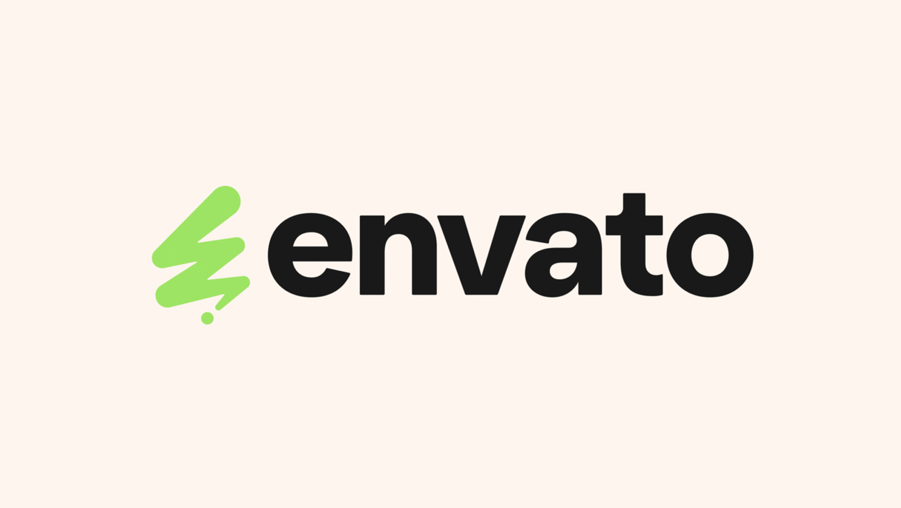
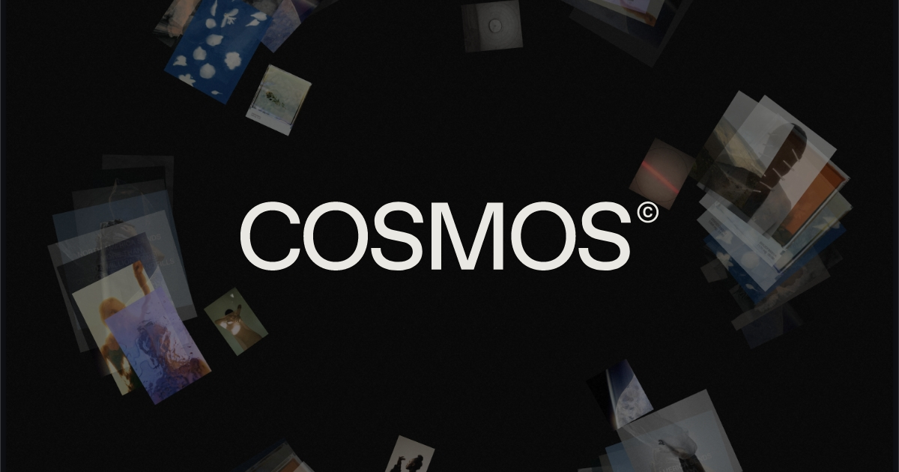

Alejandro Arciniegas
I am deeply passionate about graphic design and digital art creation. I love exploring new ways of visual expression, especially through UI design and photography with a strong cinematic aesthetic. In my free time, I’m also a big fan of video games and digital environments. I’m here at SNU as an exchange student because South Korea is a world leader in visual innovation. My goal is to immerse myself in this creative energy and take my digital art to the next level.
Things I like:

- My favorite food:Hamburguer, I always order it wherever I go! Its the best to just get a nicely served burguer after a long day of work, studies or training. My favorite one is the Double Cheeseburguers with bacon, onion rings and Bbq sauce, that is just a perfect burguer.

- Music: I actually dont have a favorite song, my music tastes constantly change so I have a lot of songs I really like and I always find new ones.My tastes constantly change; I'm always discovering new tracks. I like a few for the moment, but one thing is for sure, everytime I like a new song I live it and listen it at all times until I discover a new one. My actual favorites are "Give it up to me" from Sean Paul, "Ecoute chérie" from Vandredi sur Mer, "Creep" from Last call and "Timeless" from The Weekend.


- My favorite website: Envato, it has always helped me to take my creative abilities to another level, but also Freepik is one of my favorites, because it has just as many assets as Envato but at a much cheaper price. Also if you like to get good references for your art, design or anything then check out Cosmos, its a new website that organizes content depending on what you like and even depending on the color you wanna get inspired on.
-
Envato Elements
-
Freepik
-
Cosmos
Exercises

